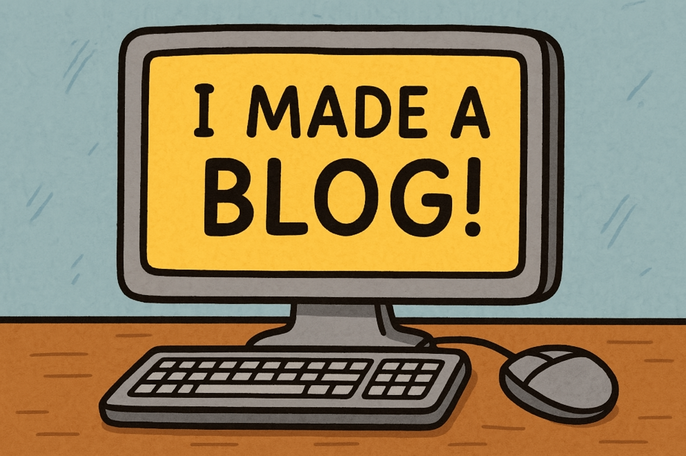

Posted on April 10, 2025
So here's the deal — I finally set up my own blog. No WordPress. No Tumblr. Just me, raw HTML, and my own weird thoughts spilling out onto the web.
This is my corner to write freely about coding experiments, AI tinkering, retro game fixes, and whatever else has me caffeinated and typing at 2am.
Posts like this are loaded dynamically when you click "Read More" — so no page reloads, just smooth transitions and chill vibes. Feels good to build something personal.